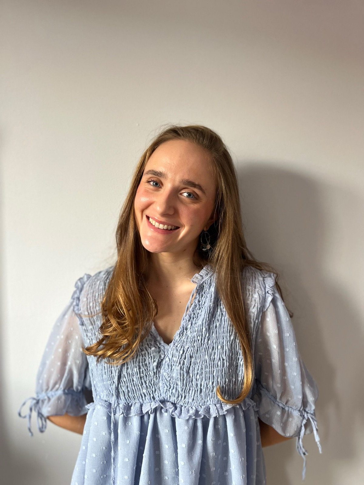
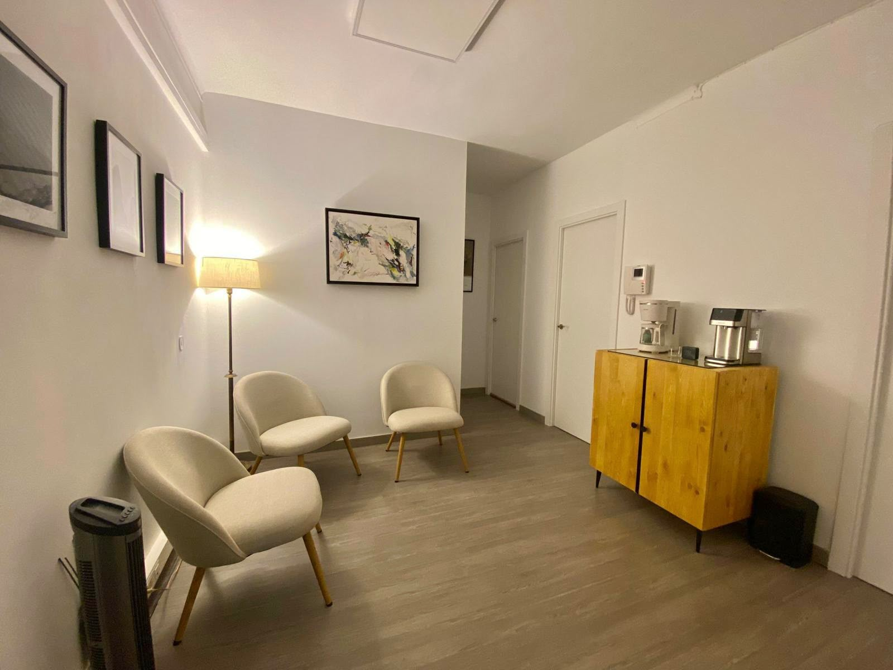
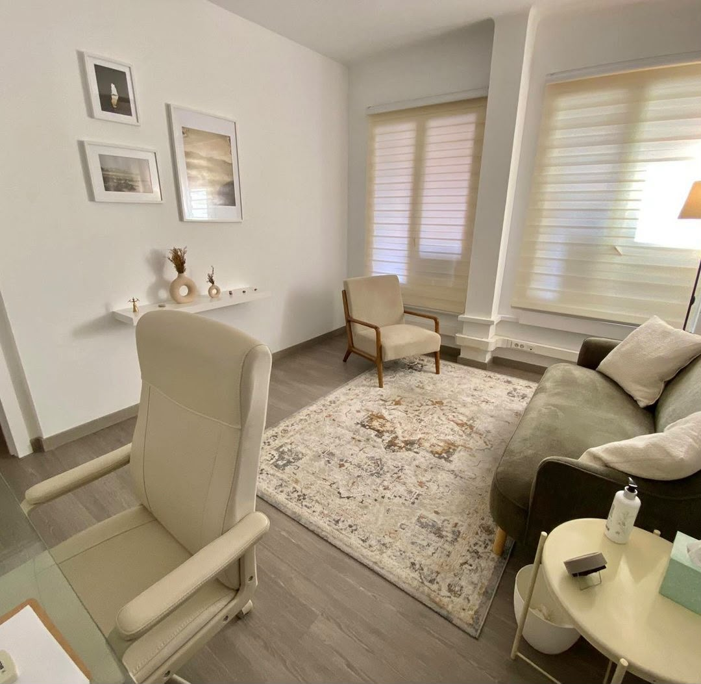

Cuéntame qué te trae por aquí.
Hola, soy Claudia, psicóloga. Nos vemos en mi consulta de Barcelona o por videollamada, donde estés más a gusto.
Hablar, y jugar o dibujar si ayuda, con la familia cerca.
Un sitio propio para hablar de lo que les preocupa, sin que nadie los juzgue.
Cuando lo que pasa afecta a todos, mirarlo juntos ayuda a entenderse.
Aprender a escucharos otra vez, sin ganar ni perder.
Para cuando algo no encaja desde hace tiempo y quieres entender qué es.

Hay días en los que todo pesa.
Baja despacio y verás cómo se hace de día. Si quieres, mientras tanto respiramos juntos: cuatro segundos para tomar aire, seis para soltarlo.
Baja despacio
No hace falta tocar fondo para pedir ayuda.
Atiendo a niños, adolescentes, familias, parejas y adultos. Puedes venir con una idea clara o solo con la sensación de que algo no va bien.
Empieza cuando quieras.
Puedes mirar primero las terapias o preguntarme lo que necesites.
Terapias
Según quién venga, trabajo de una forma u otra. He marcado la que elegiste arriba, y puedes abrir cualquiera para leer cómo es.
-
Terapia individual
Sesiones solo para ti, para entender qué te pasa y qué quieres cambiar.
-
Terapia de pareja
Para cuando os cuesta hablar sin acabar discutiendo.
-
Terapia familiar
Cuando lo que pasa en casa os afecta a todos y conviene hablarlo juntos.
-
Terapia infantojuvenil
Para niños y adolescentes que lo están pasando mal, con la familia cerca.
-
Neuroevaluación
Entender cómo aprende una persona cuando algo le cuesta y no se sabe por qué.


Quién soy
Soy curiosa y reflexiva, y sé escuchar. Me motiva el cambio, y respeto la historia de cada persona tal como viene, sin juzgarla. Soy cercana sin dejar de ser profesional, y respeto los límites que pone cada uno.
Atiendo a niños, adolescentes, familias, parejas y adultos desde una perspectiva psicológica integradora, que intenta adaptarse a las necesidades de quien tengo delante.
Trabajo en equipos multidisciplinares y llevo mis casos a supervisión, lo que me ayuda a entender mejor a cada persona y a mí misma.
Así es mi consulta en Barcelona. Si prefieres la videollamada, el sitio tranquilo lo pones tú.
- Curiosa
- Reflexiva
- Escucha activa
- Cercana
- Sin juicios
Cómo trabajo
Lo que puedes esperar de mí en cualquiera de las terapias.
-
Atención individualizada
Cada persona llega con su historia. Lo que hacemos en terapia lo decidimos juntos y lo vamos ajustando.
-
Terapia integradora
Combino enfoques según lo que necesites en cada momento.
-
Supervisión de casos
Comento mis casos con un equipo terapéutico; otras miradas ven lo que a mí se me escapa.
-
Formación constante
Sigo formándome para no quedarme con lo que ya sé.
-
Estudio y práctica
Formación académica y práctica clínica en equipos multidisciplinares.
Pedir una primera sesión.
La primera sesión es para conocernos. Después decides tú si seguimos. Puede ser online o presencial.
Si prefieres preguntar antes, escríbeme.